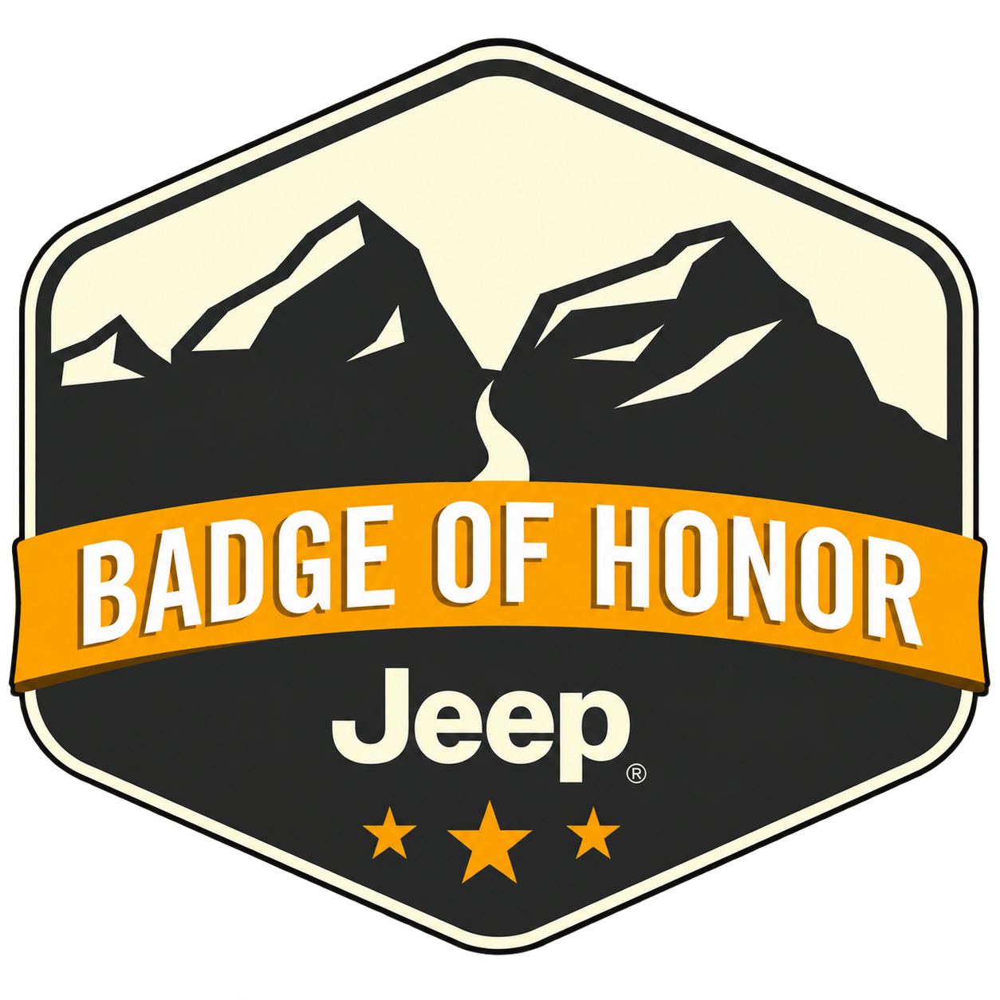

Website · Trail page proposal · 6 Oct 2026
Uphill Both Ways
Research on the Jeep Badge of Honor program and the trail, an audit of the current prototype page, and a proposed page: sections, copy, graphics and the facts we still need from the owner.
